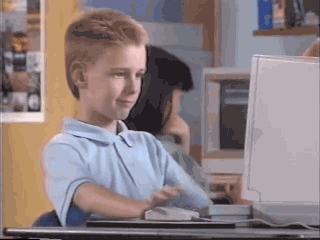

1990s: The Wild West of the Web (c. 1990-1999)
The 1990s marked the commercial birth of the internet, a period of raw experimentation and rapid growth. Websites were often functional first, with aesthetics taking a backseat due to technological limitations and slow dial-up connections.
Key Characteristics: Table layouts, web-safe colors, animated GIFs, hit counters, and often a very "busy" look.
Defining Design Elements (90s Style)
Layouts
Primarily table-based for structuring content. Often fixed-width and centered. Framesets were common for persistent navigation.
Color Palettes
Dominated by web-safe colors (216 specific colors). Often bright, clashing, and sometimes jarring combinations.
Imagery & Graphics
Low-resolution GIFs and JPEGs. Animated GIFs were extremely popular. Tiled background images were common.
Typography
Default browser fonts like Times New Roman and Arial were prevalent. Text was often styled using the <FONT> tag.
Interactive Elements
HTML forms, image maps, <marquee> tags for scrolling text, hit counters, and rudimentary JavaScript.
Iconic Websites of the Era (90s Style)

AltaVista (1995)
View on Wayback Machine
A Live 90s Style Snippet
Animated GIF
Table Layout Example
| CELL 1 | CELL 2 |
| CELL 3 | CELL 4 |